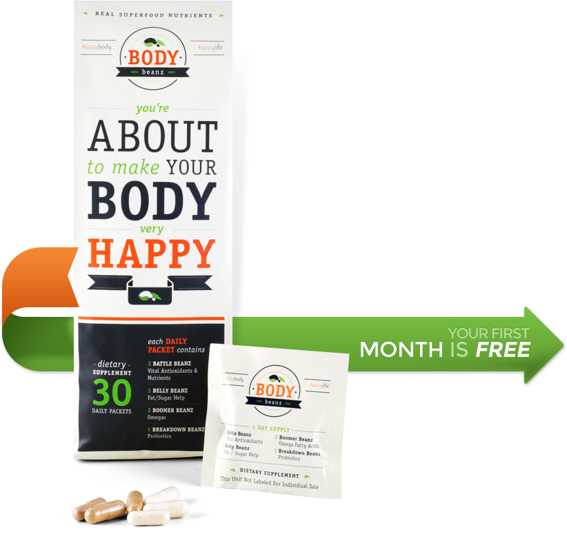
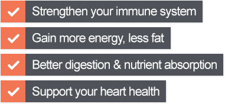

here's how
to make your body super happy

let's
get started
Be healthy. Feel great! Body Beanz are all in one, truly all natural, daily supplemental nutrition — Read on to discover how you can try them
100% risk free.
what "they" don't want you to know?
Doesn't superfood nutrition sound better than chemical nutrition? Most vitamin/supplement brands are man-made crystalline chemical isolates, not organically whole vitamins you find in real food. And guess what? They're often derived from petroleum extracts, coal tar derivatives, and other industrial chemical by-products. Amazing! Just think...this is the very thing you take daily to “supplement” your diet for maximum health. Is that what you want to be taking?